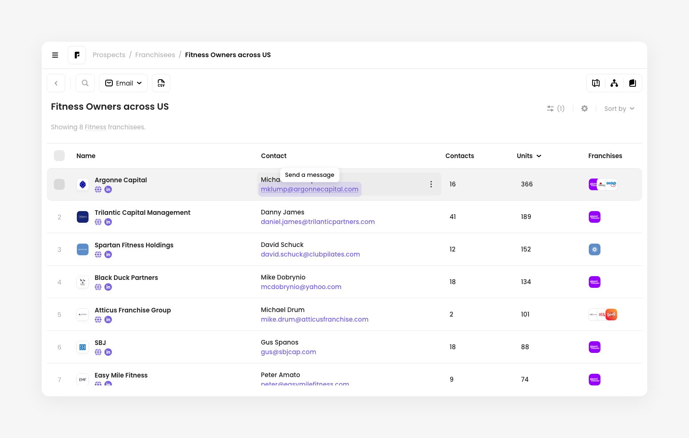
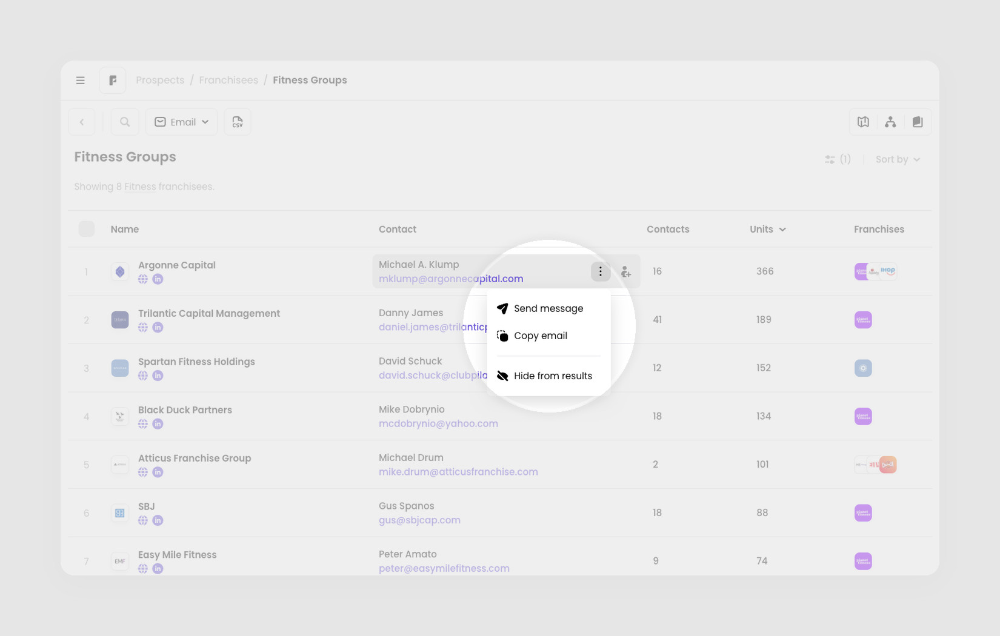
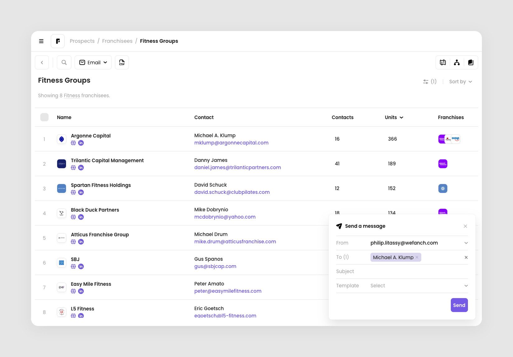
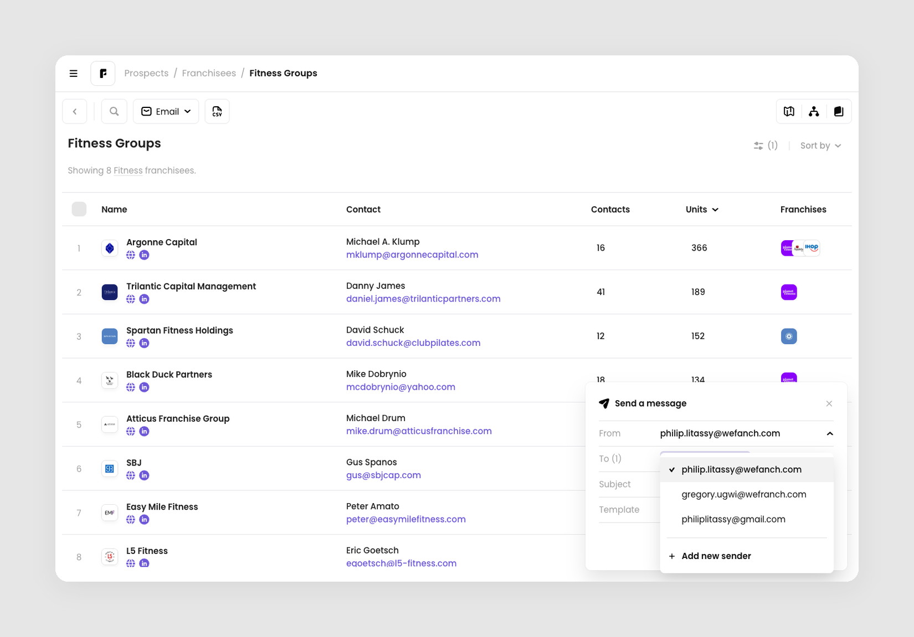
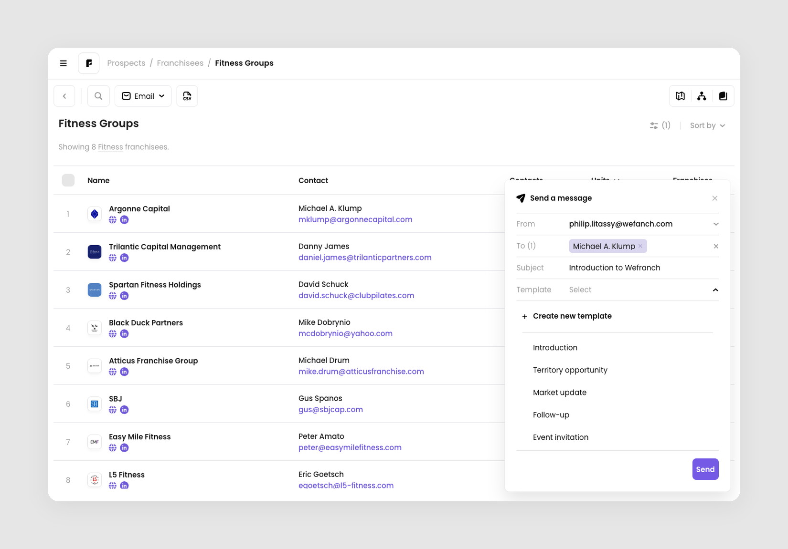
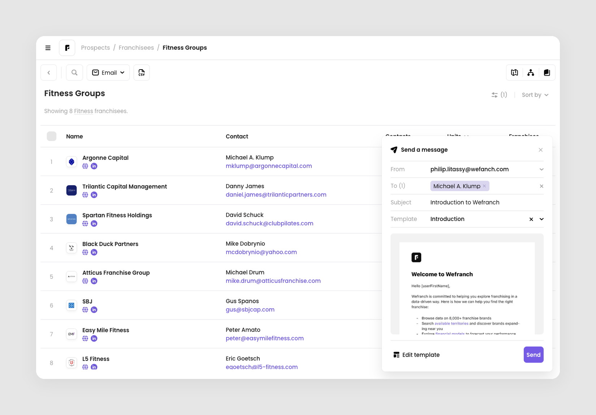
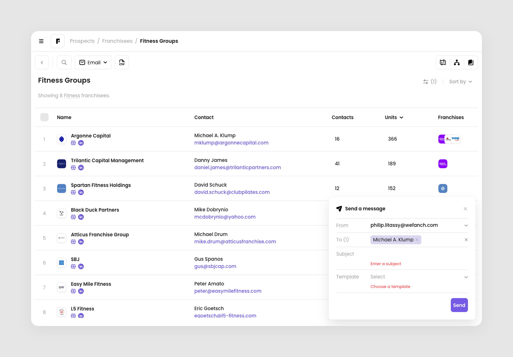
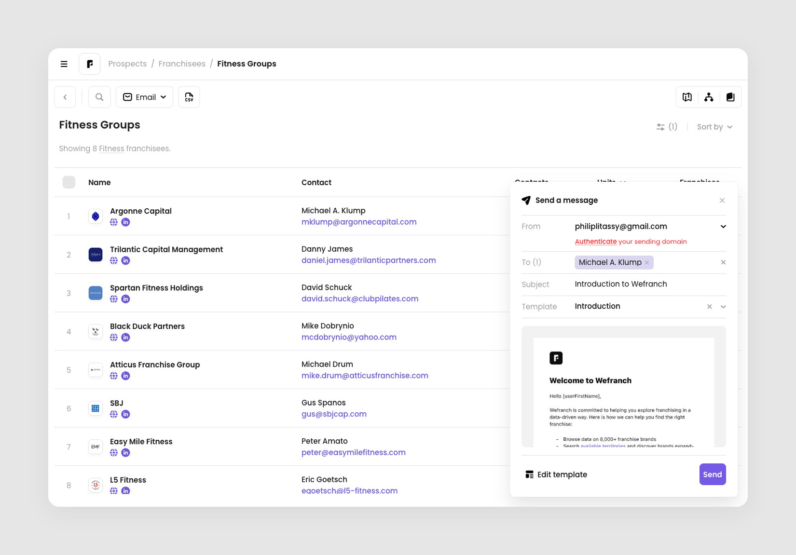
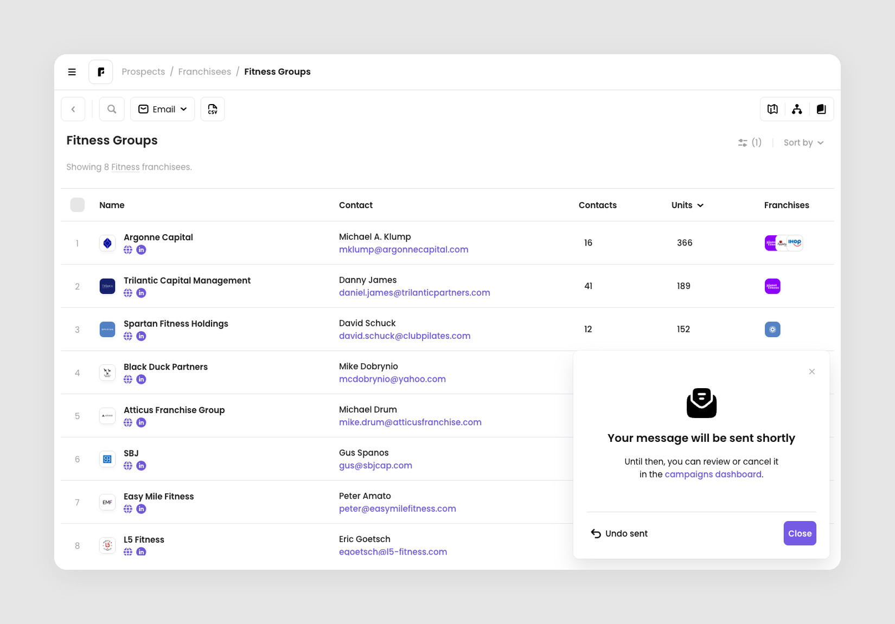

Sending 1:1 direct email messages
How it works
Direct mailing lets you send a pre-built email template to one contact, without setting up a campaign. Use it for a quick introduction or a follow-up to someone you found on Prospects.
You write the message in a small Send a message card that opens over the page, so you keep your search and table in view. A message needs a sender, at least one recipient, a subject line, and a template. There is no wizard, no schedule, and no sequence. If you want any of those, create an email campaign instead.
Open the Send a message card
There are two ways to open the card. Each one pre-fills the To field for you.
Click an email address. Hover over a contact's email address in the table. A Send a message tooltip appears. Click the address to open the card with that contact as the only recipient.

Use the contact menu. Hover over a contact and click the three-dot button next to the email address, then choose Send message. The menu also has Copy email and Hide from results.

The Send a message card opens in the bottom right corner with that contact in the To field.

Choose a sender
The From field starts with your default sender. Open it to pick another address, or choose Add new sender to add one. To authenticate a new sender, follow How to set up your sending domain.

Check the recipients
Each recipient in To is shown as a chip, and the label counts them, for example To (1).
- Click the × on a chip to remove that person. Click the × at the end of the field to remove everyone.
- A person is only added once, even if they appear in your results more than once.
Write the subject and choose a template
Enter a Subject. It can be up to 150 characters.
Then open Template and pick the email template to use. The card expands to list your saved templates. Choose Create new template at the top if none of them fit.

Once you choose a template, a preview shows what recipients will get. Scroll inside the preview to read all of it. Click Edit template to change the template itself. To pick a different one, open the Template field again, or click the × to clear it.

Send the message
Click Send, or press Enter while your cursor is in the subject line. If something is missing, the card shows a red message under the field and moves your cursor to the first one:
- Choose a sender email. No sender is selected.
- Add at least one recipient. The To field is empty.
- Enter a subject. The subject line is blank.
- Choose a template. No template is selected.

If your sender isn't authenticated
You can only send from an authenticated address. If you pick one that isn't, the card shows Authenticate your sending domain under From. Click Authenticate to finish setting it up without leaving the card, or choose a different sender. See How to set up your sending domain for the steps.

After you send
The button shows Sending… for a moment, then the card confirms Your message will be sent shortly. Until it goes out, you can review or cancel it in the campaigns dashboard.
- Click Undo sent to go back to the message. Everything you entered is still there, so you can fix it and send again.
- Click Close when you're done.

Close the card without sending
Click the × in the corner, or press Esc. The message isn't saved as a draft, so the recipients, subject, and template are cleared. The next time you open the card, you start fresh.
If a dropdown is open, Esc closes the dropdown first. Press it again to close the card.